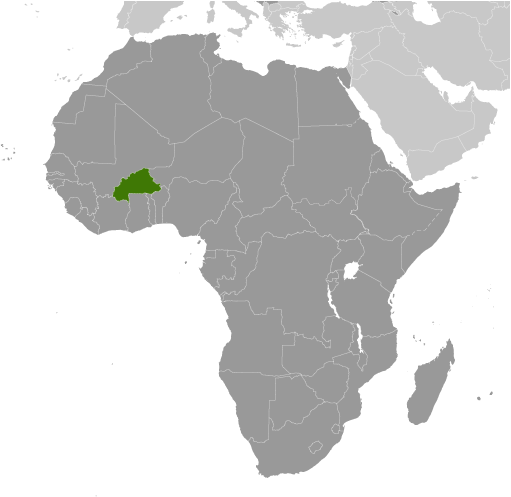
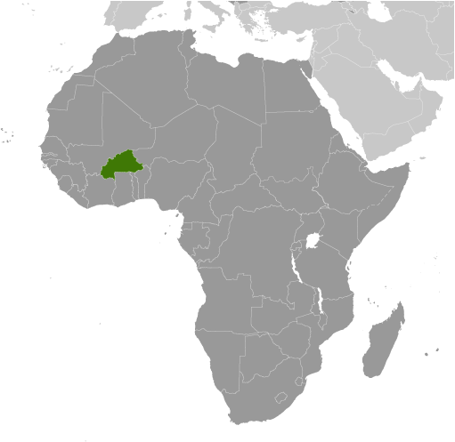

-
Introduction :: Burkina Faso
-
Background:Burkina Faso (formerly Upper Volta) achieved independence from France in 1960. Repeated military coups during the 1970s and 1980s were followed by multiparty elections in the early 1990s. Former President Blaise COMPAORE (1987-2014) resigned in late October 2014 following popular protests against his efforts to amend the constitution's two-term presidential limit. An interim administration organized presidential and legislative elections - finally held in November 2015 - where Roch Marc Christian KABORE was elected president. The country experienced terrorist attacks in its capital in 2016, 2017, and 2018 and continues to mobilize resources to counter terrorist threats. Burkina Faso's high population growth, recurring drought, pervasive and perennial food insecurity, and limited natural resources result in poor economic prospects for the majority of its citizens.
-
Geography :: Burkina Faso
-
Location:Western Africa, north of GhanaGeographic coordinates:13 00 N, 2 00 WMap references:AfricaArea:total: 274,200 sq kmland: 273,800 sq kmwater: 400 sq kmcountry comparison to the world: 76Area - comparative:slightly larger than ColoradoLand boundaries:total: 3,611 kmborder countries (6): Benin 386 km, Cote d'Ivoire 545 km, Ghana 602 km, Mali 1325 km, Niger 622 km, Togo 131 kmCoastline:0 km (landlocked)Maritime claims:none (landlocked)Climate:tropical; warm, dry winters; hot, wet summersTerrain:mostly flat to dissected, undulating plains; hills in west and southeastElevation:mean elevation: 297 melevation extremes: 200 m lowest point: Mouhoun (Black Volta) River749 highest point: Tena KourouNatural resources:manganese, limestone, marble; small deposits of gold, phosphates, pumice, saltLand use:agricultural land: 43% (2011 est.)arable land: 20.8% (2011 est.) / permanent crops: 0.3% (2011 est.) / permanent pasture: 21.9% (2011 est.)forest: 20.4% (2011 est.)other: 36.6% (2011 est.)Irrigated land:550 sq km (2012)Population distribution:the population is concentrated in the central and southern parts of the country; the east, north, and southwest are less populatedNatural hazards:recurring droughtsEnvironment - current issues:recent droughts and desertification severely affecting agricultural activities, population distribution, and the economy; overgrazing; soil degradation; deforestationEnvironment - international agreements:party to: Biodiversity, Climate Change, Climate Change-Kyoto Protocol, Desertification, Endangered Species, Hazardous Wastes, Law of the Sea, Marine Life Conservation, Ozone Layer Protection, Wetlandssigned, but not ratified: none of the selected agreementsGeography - note:landlocked savanna cut by the three principal rivers of the Black, Red, and White Voltas
-
People and Society :: Burkina Faso
-
Population:19,742,715 (July 2018 est.)
note: estimates for this country explicitly take into account the effects of excess mortality due to AIDS; this can result in lower life expectancy, higher infant mortality, higher death rates, lower population growth rates, and changes in the distribution of population by age and sex than would otherwise be expected
country comparison to the world: 61Nationality:noun: Burkinabe (singular and plural)adjective: BurkinabeEthnic groups:Mossi 52%, Fulani 8.4%, Gurma 7%, Bobo 4.9%, Gurunsi 4.6%, Senufo 4.5%, Bissa 3.7%, Lobi 2.4%, Dagara 2.4%, Tuareg/Bella 1.9%, Dioula 0.8%, unspecified/no answer 0.3%, other 7.2% (2010 est.)Languages:French (official), French native African languages belonging to Sudanic family spoken by 90% of the populationReligions:Muslim 61.5%, Roman Catholic 23.3%, traditional/animist 7.8%, Protestant 6.5%, other/no answer 0.2%, none 0.7% (2010 est.)Demographic profile:Burkina Faso has a young age structure – the result of declining mortality combined with steady high fertility – and continues to experience rapid population growth, which is putting increasing pressure on the country’s limited arable land. More than 65% of the population is under the age of 25, and the population is growing at 3% annually. Mortality rates, especially those of infants and children, have decreased because of improved health care, hygiene, and sanitation, but women continue to have an average of almost 6 children. Even if fertility were substantially reduced, today’s large cohort entering their reproductive years would sustain high population growth for the foreseeable future. Only about a third of the population is literate and unemployment is widespread, dampening the economic prospects of Burkina Faso’s large working-age population.
Migration has traditionally been a way of life for Burkinabe, with seasonal migration being replaced by stints of up to two years abroad. Cote d’Ivoire remains the top destination, although it has experienced periods of internal conflict. Under French colonization, Burkina Faso became a main labor source for agricultural and factory work in Cote d’Ivoire. Burkinabe also migrated to Ghana, Mali, and Senegal for work between the world wars. Burkina Faso attracts migrants from Cote d’Ivoire, Ghana, and Mali, who often share common ethnic backgrounds with the Burkinabe. Despite its food shortages and high poverty rate, Burkina Faso has become a destination for refugees in recent years and hosts about 33,500 Malians as of May 2017.
Age structure:0-14 years: 44.28% (male 4,434,908 /female 4,307,438)15-24 years: 20.19% (male 1,980,755 /female 2,004,763)25-54 years: 28.82% (male 2,639,235 /female 3,051,333)55-64 years: 3.55% (male 304,642 /female 396,072)65 years and over: 3.16% (male 273,031 /female 350,538) (2018 est.)population pyramid: The World Factbook Field Image ModalAfrica :: Burkina Faso Print
The World Factbook Field Image ModalAfrica :: Burkina Faso Print Image DescriptionThis is the population pyramid for Burkina Faso. A population pyramid illustrates the age and sex structure of a country's population and may provide insights about political and social stability, as well as economic development. The population is distributed along the horizontal axis, with males shown on the left and females on the right. The male and female populations are broken down into 5-year age groups represented as horizontal bars along the vertical axis, with the youngest age groups at the bottom and the oldest at the top. The shape of the population pyramid gradually evolves over time based on fertility, mortality, and international migration trends.
Image DescriptionThis is the population pyramid for Burkina Faso. A population pyramid illustrates the age and sex structure of a country's population and may provide insights about political and social stability, as well as economic development. The population is distributed along the horizontal axis, with males shown on the left and females on the right. The male and female populations are broken down into 5-year age groups represented as horizontal bars along the vertical axis, with the youngest age groups at the bottom and the oldest at the top. The shape of the population pyramid gradually evolves over time based on fertility, mortality, and international migration trends.
For additional information, please see the entry for Population pyramid on the Definitions and Notes page under the References tab.Dependency ratios:total dependency ratio: 92.2 (2015 est.)youth dependency ratio: 87.6 (2015 est.)elderly dependency ratio: 4.6 (2015 est.)potential support ratio: 21.6 (2015 est.)Median age:total: 17.4 yearsmale: 16.6 yearsfemale: 18.2 years (2018 est.)country comparison to the world: 218Population growth rate:2.76% (2018 est.)country comparison to the world: 12Birth rate:36.9 births/1,000 population (2018 est.)country comparison to the world: 14Death rate:8.7 deaths/1,000 population (2018 est.)country comparison to the world: 72Net migration rate:0 migrant(s)/1,000 population (2017 est.)country comparison to the world: 76Population distribution:the population is concentrated in the central and southern parts of the country; the east, north, and southwest are less populatedUrbanization:urban population: 29.4% of total population (2018)rate of urbanization: 4.99% annual rate of change (2015-20 est.)Major urban areas - population:2.531 million OUAGADOUGOU (capital), 879,000 Bobo-Dioulasso (2018)Sex ratio:at birth: 1.02 male(s)/female (2017 est.)0-14 years: 1 male(s)/female (2017 est.)15-24 years: 1.01 male(s)/female (2017 est.)25-54 years: 1.03 male(s)/female (2017 est.)55-64 years: 0.77 male(s)/female (2017 est.)65 years and over: 0.6 male(s)/female (2017 est.)total population: 0.99 male(s)/female (2017 est.)Mother's mean age at first birth:19.4 years (2010 est.)note: median age at first birth among women 25-29
Maternal mortality rate:371 deaths/100,000 live births (2015 est.)country comparison to the world: 31Infant mortality rate:total: 54.7 deaths/1,000 live births (2018 est.)male: 59.2 deaths/1,000 live births (2018 est.)female: 50 deaths/1,000 live births (2018 est.)country comparison to the world: 21Life expectancy at birth:total population: 61.8 years (2018 est.)male: 60.1 years (2018 est.)female: 63.6 years (2018 est.)country comparison to the world: 202Total fertility rate:4.77 children born/woman (2018 est.)country comparison to the world: 19Contraceptive prevalence rate:25.4% (2016/17)Health expenditures:5% of GDP (2014)country comparison to the world: 140Physicians density:0.05 physicians/1,000 population (2012)Hospital bed density:0.4 beds/1,000 population (2010)Drinking water source:improved: urban: 97.5% of populationrural: 75.8% of populationtotal: 82.3% of populationunimproved: urban: 2.5% of populationrural: 24.2% of populationtotal: 17.7% of population (2015 est.)Sanitation facility access:improved: urban: 50.4% of population (2015 est.)rural: 6.7% of population (2015 est.)total: 19.7% of population (2015 est.)unimproved: urban: 49.6% of population (2015 est.)rural: 93.3% of population (2015 est.)total: 80.3% of population (2015 est.)HIV/AIDS - adult prevalence rate:0.8% (2017 est.)country comparison to the world: 50HIV/AIDS - people living with HIV/AIDS:94,000 (2017 est.)country comparison to the world: 45HIV/AIDS - deaths:2,900 (2017 est.)country comparison to the world: 40Major infectious diseases:degree of risk: very high (2016)food or waterborne diseases: bacterial and protozoal diarrhea, hepatitis A, and typhoid fever (2016)vectorborne diseases: dengue fever, malaria, and yellow fever (2016)water contact diseases: schistosomiasis (2016)animal contact diseases: rabies (2016)respiratory diseases: meningococcal meningitis (2016)Obesity - adult prevalence rate:5.6% (2016)country comparison to the world: 175Children under the age of 5 years underweight:19.2% (2016)country comparison to the world: 27Education expenditures:4.2% of GDP (2015)country comparison to the world: 105Literacy:definition: age 15 and over can read and write (2015 est.)total population: 36% (2015 est.)male: 43% (2015 est.)female: 29.3% (2015 est.)School life expectancy (primary to tertiary education):total: 8 years (2013)male: 8 years (2013)female: 7 years (2013)Unemployment, youth ages 15-24:total: 8.7%male: 5.3%female: 12.6%country comparison to the world: 133 -
Government :: Burkina Faso
-
Country name:conventional long form: noneconventional short form: Burkina Fasolocal long form: nonelocal short form: Burkina Fasoformer: Upper Volta, Republic of Upper Voltaetymology: name translates as "Land of the Honest (Incorruptible) Men"Government type:presidential republicCapital:name: Ouagadougougeographic coordinates: 12 22 N, 1 31 Wtime difference: UTC 0 (5 hours ahead of Washington, DC, during Standard Time)Administrative divisions:13 regions; Boucle du Mouhoun, Cascades, Centre, Centre-Est, Centre-Nord, Centre-Ouest, Centre-Sud, Est, Hauts-Bassins, Nord, Plateau-Central, Sahel, Sud-OuestIndependence:5 August 1960 (from France)National holiday:Republic Day, 11 December (1958); note - commemorates the day that Upper Volta became an autonomous republic in the French CommunityConstitution:history: several previous; latest approved by referendum 2 June 1991, adopted 11 June 1991, temporarily suspended late October to mid-November 2014 (2017)amendments: proposed by the president, by a majority of National Assembly membership, or by petition of at least 30,000 eligible voters submitted to the Assembly; passage requires at least three-fourths majority vote in the Assembly; failure to meet that threshold requires majority voter approval in a referendum; constitutional provisions on the form of government, the multiparty system, and national sovereignty cannot be amended; amended several times, last in 2012 (2017)Legal system:civil law based on the French model and customary lawInternational law organization participation:has not submitted an ICJ jurisdiction declaration; accepts ICCt jurisdictionCitizenship:citizenship by birth: nocitizenship by descent only: at least one parent must be a citizen of Burkina Fasodual citizenship recognized: yesresidency requirement for naturalization: 10 yearsSuffrage:18 years of age; universalJudicial branch:highest courts: Supreme Court of Appeals or Cour de Cassation (consists of NA judges); Council of State (consists of NA judges); Constitutional Council or Conseil Constitutionnel (consists of the council president and 9 members)judge selection and term of office: Supreme Court judge appointments mostly controlled by the president of Burkina Faso; judges have no term limits; Council of State judge appointment and tenure NA; Constitutional Council judges appointed by the president of Burkina Faso upon the proposal of the minister of justice and the president of the National Assembly; judges appointed for 9-year terms with one-third of membership renewed every 3 yearssubordinate courts: Appeals Court; High Court; first instance tribunals; district courts; specialized courts relating to issues of labor, children, and juveniles; village (customary) courtsExecutive branch:chief of state: President Roch Marc Christian KABORE (since 29 December 2015)head of government: Prime Minister Paul Kaba THIEBA (since 6 January 2016)cabinet: Council of Ministers appointed by the president on the recommendation of the prime ministerelections/appointments: president elected by absolute majority popular vote in 2 rounds if needed for a 5-year term (eligible for a second); election last held on 29 November 2015 (next to be held November 2020); prime minister appointed by the president with consent of the National Assemblyelection results: Roch Marc Christian KABORE elected president in first round; percent of vote - Roch Marc Christian KABORE (MPP) 53.5%, Zephirin DIABRE (UPC) 29.6%, Tahirou BARRY (PAREN) 3.1%. Benewende Stanislas SANKARA (UNIR-MS) 2.8%, other 10.9%Legislative branch:description: unicameral National Assembly (127 seats; members directly elected in multi-seat constituencies by party-list proportional representation vote to serve 5-year terms)elections: last held on 29 November 2015 (next to be held in 2020)election results: percent of vote by party - NA; seats by party - MPP 55, UPC 33, CDP 18, Union for Rebirth-Sankarist Party 5, ADF/RDA 3, NTD 3, other 10; composition - men 115, women 12, percent of women 9.4%Political parties and leaders:African Democratic Rally/Alliance for Democracy and Federation or ADF/RDA [Gilbert Noel OUEDRAOGO]
African People’s Movement or MAP [Victorien TOUGOUMA]
Congress for Democracy and Progress or CDP [Eddie KOMBOIGO]
Le Faso Autrement [Ablasse OUEDRAOGO]
New Alliance of the Faso or NAFA [Mahamoudou DICKO]
New Time for Democracy or NTD [Vincent DABILGOU]
Organization for Democracy and Work or ODT [Anatole BONKOUNGOU]
Party for Development and Change or PDC [Aziz SEREME]
Party for Democracy and Progress-Socialist Party or PDP-PS [Drabo TORO]
Party for Democracy and Socialism/Metba or PDS/Metba [Philippe OUEDRAOGO]
Party for National Renaissance or PAREN [Michel BERE]
People's Movement for Progress or MPP [Simon COMPAORE]
Rally for Democracy and Socialism or RDS [Francois OUEDRAOGO]
Rally for the Development of Burkina or RDB [Celestin Saidou COMPAORE]
Rally of Ecologists of Burkina Faso or RDEB [Adama SERE]
Union for a New Burkina or UBN [Diemdioda DICKO]
Union for Progress and Change or UPC [Zephirin DIABRE]
Union for Rebirth - Sankarist Party or UNIR-MS [Benewende Stanislas SANKARA]
Union for the Republic or UPR [Toussaint Abel COULIBALY]
Youth Alliance for the Republic and Independence or AJIR [Adama KANAZOE]International organization participation:ACP, AfDB, AU, CD, ECOWAS, EITI (compliant country), Entente, FAO, FZ, G-77, IAEA, IBRD, ICAO, ICC (NGOs), ICCt, ICRM, IDA, IDB, IFAD, IFC, IFRCS, ILO, IMF, Interpol, IOC, IOM, IPU, ISO, ITSO, ITU, ITUC (NGOs), MIGA, MINUSMA, MONUSCO, NAM, OIC, OIF, OPCW, PCA, UN, UNAMID, UNCTAD, UNESCO, UNIDO, UNISFA, UNITAR, UNWTO, UPU, WADB (regional), WAEMU, WCO, WFTU (NGOs), WHO, WIPO, WMO, WTODiplomatic representation in the US:chief of mission: Ambassador Seydou KABORE (since 18 January 2017)chancery: 2340 Massachusetts Avenue NW, Washington, DC 20008telephone: [1] (202) 332-5577FAX: [1] (202) 667-1882Diplomatic representation from the US:chief of mission: Ambassador Andrew YOUNG (since 1 December 2016)embassy: Rue 15.873, Avenue Sembene Ousmane, Ouaga 2000, Secteur 15mailing address: 01 B. P. 35, Ouagadougou 01; pouch mail - US Department of State, 2440 Ouagadougou Place, Washington, DC 20521-2440telephone: [226] 25-49-53-00FAX: [226] 25-49-56-28Flag description:two equal horizontal bands of red (top) and green with a yellow five-pointed star in the center; red recalls the country's struggle for independence, green is for hope and abundance, and yellow represents the country's mineral wealthnote: uses the popular Pan-African colors of Ethiopia
National symbol(s):white stallion; national colors: red, yellow, greenNational anthem:name: "Le Ditanye" (Anthem of Victory)lyrics/music: Thomas SANKARAnote: adopted 1974; also known as "Une Seule Nuit" (One Single Night); written by the country's former president, an avid guitar player
-
Economy :: Burkina Faso
-
Economy - overview:
Burkina Faso is a poor, landlocked country that depends on adequate rainfall. Irregular patterns of rainfall, poor soil, and the lack of adequate communications and other infrastructure contribute to the economy’s vulnerability to external shocks. About 80% of the population is engaged in subsistence farming and cotton is the main cash crop. The country has few natural resources and a weak industrial base.
Cotton and gold are Burkina Faso’s key exports - gold has accounted for about three-quarters of the country’s total export revenues. Burkina Faso’s economic growth and revenue depends largely on production levels and global prices for the two commodities. The country has seen an upswing in gold exploration, production, and exports.
In 2016, the government adopted a new development strategy, set forth in the 2016-2020 National Plan for Economic and Social Development, that aims to reduce poverty, build human capital, and to satisfy basic needs. A new three-year IMF program (2018-2020), approved in 2018, will allow the government to reduce the budget deficit and preserve critical spending on social services and priority public investments.
While the end of the political crisis has allowed Burkina Faso’s economy to resume positive growth, the country’s fragile security situation could put these gains at risk. Political insecurity in neighboring Mali, unreliable energy supplies, and poor transportation links pose long-term challenges.
GDP (purchasing power parity):$35.85 billion (2017 est.)$33.69 billion (2016 est.)$31.81 billion (2015 est.)note: data are in 2017 dollars
country comparison to the world: 126GDP (official exchange rate):$12.57 billion (2017 est.) (2017 est.)GDP - real growth rate:6.4% (2017 est.)5.9% (2016 est.)3.9% (2015 est.)country comparison to the world: 31GDP - per capita (PPP):$1,900 (2017 est.)$1,800 (2016 est.)$1,800 (2015 est.)note: data are in 2017 dollars
country comparison to the world: 211Gross national saving:9.3% of GDP (2017 est.)8.5% of GDP (2016 est.)5.3% of GDP (2015 est.)country comparison to the world: 164GDP - composition, by end use:household consumption: 56.5% (2017 est.)government consumption: 23.9% (2017 est.)investment in fixed capital: 24.6% (2017 est.)investment in inventories: 1% (2017 est.)exports of goods and services: 28.4% (2017 est.)imports of goods and services: -34.4% (2017 est.)GDP - composition, by sector of origin:agriculture: 31% (2017 est.)industry: 23.9% (2017 est.)services: 44.9% (2017 est.)Agriculture - products:cotton, peanuts, shea nuts, sesame, sorghum, millet, corn, rice; livestockIndustries:cotton lint, beverages, agricultural processing, soap, cigarettes, textiles, goldIndustrial production growth rate:10.4% (2017 est.)country comparison to the world: 14Labor force:8.501 million (2016 est.)note: a large part of the male labor force migrates annually to neighboring countries for seasonal employment
country comparison to the world: 60Labor force - by occupation:agriculture: 90%industry and services: 10% (2000 est.)Unemployment rate:77% (2004)country comparison to the world: 218Population below poverty line:40.1% (2009 est.)Distribution of family income - Gini index:39.5 (2007)48.2 (1994)country comparison to the world: 70Budget:revenues: 2.666 billion (2017 est.)expenditures: 3.655 billion (2017 est.)Taxes and other revenues:21.2% (of GDP) (2017 est.)country comparison to the world: 143Budget surplus (+) or deficit (-):-7.9% (of GDP) (2017 est.)country comparison to the world: 198Public debt:38.1% of GDP (2017 est.)38.3% of GDP (2016 est.)country comparison to the world: 136Fiscal year:calendar yearInflation rate (consumer prices):0.4% (2017 est.)-0.2% (2016 est.)country comparison to the world: 22Central bank discount rate:4.25% (31 December 2010)4.25% (31 December 2009)country comparison to the world: 88Commercial bank prime lending rate:5.3% (31 December 2017 est.)5.3% (31 December 2016 est.)country comparison to the world: 141Stock of narrow money:$3.357 billion (31 December 2017 est.)$2.602 billion (31 December 2016 est.)country comparison to the world: 119Stock of broad money:$3.357 billion (31 December 2017 est.)$2.602 billion (31 December 2016 est.)country comparison to the world: 124Stock of domestic credit:$4.409 billion (31 December 2017 est.)$3.301 billion (31 December 2016 est.)country comparison to the world: 130Current account balance:-$1.019 billion (2017 est.)-$820 million (2016 est.)country comparison to the world: 143Exports:$3.14 billion (2017 est.)$2.641 billion (2016 est.)country comparison to the world: 129Exports - partners:Switzerland 44.9%, India 15.6%, South Africa 11.3%, Cote dIvoire 4.9% (2017)Exports - commodities:gold, cotton, livestockImports:$3.305 billion (2017 est.)$2.827 billion (2016 est.)country comparison to the world: 145Imports - commodities:capital goods, foodstuffs, petroleumImports - partners:China 13.2%, Cote dIvoire 9.5%, US 8.2%, Thailand 8.1%, France 6.5%, Ghana 4.4%, Togo 4.4%, India 4.3% (2017)Reserves of foreign exchange and gold:$49 million (31 December 2017 est.)$50.9 million (31 December 2016 est.)country comparison to the world: 186Debt - external:$3.056 billion (31 December 2017 est.)$2.88 billion (31 December 2016 est.)country comparison to the world: 142Exchange rates:Communaute Financiere Africaine francs (XOF) per US dollar -605.3 (2017 est.)593.01 (2016 est.)593.01 (2015 est.)591.45 (2014 est.)494.42 (2013 est.) -
Energy :: Burkina Faso
-
Electricity access:population without electricity: 14.1 million (2013)electrification - total population: 17% (2013)electrification - urban areas: 56% (2013)electrification - rural areas: 1% (2013)Electricity - production:990 million kWh (2016 est.)country comparison to the world: 152Electricity - consumption:1.551 billion kWh (2016 est.)country comparison to the world: 148Electricity - exports:0 kWh (2016 est.)country comparison to the world: 112Electricity - imports:630 million kWh (2016 est.)country comparison to the world: 77Electricity - installed generating capacity:342,400 kW (2016 est.)country comparison to the world: 153Electricity - from fossil fuels:80% of total installed capacity (2016 est.)country comparison to the world: 82Electricity - from nuclear fuels:0% of total installed capacity (2017 est.)country comparison to the world: 57Electricity - from hydroelectric plants:9% of total installed capacity (2017 est.)country comparison to the world: 117Electricity - from other renewable sources:12% of total installed capacity (2017 est.)country comparison to the world: 72Crude oil - production:0 bbl/day (2017 est.)country comparison to the world: 115Crude oil - exports:0 bbl/day (2015 est.)country comparison to the world: 100Crude oil - imports:0 bbl/day (2015 est.)country comparison to the world: 102Crude oil - proved reserves:0 bbl (1 January 2018 est.)country comparison to the world: 112Refined petroleum products - production:0 bbl/day (2015 est.)country comparison to the world: 124Refined petroleum products - consumption:23,000 bbl/day (2016 est.)country comparison to the world: 132Refined petroleum products - exports:0 bbl/day (2015 est.)country comparison to the world: 136Refined petroleum products - imports:23,580 bbl/day (2015 est.)country comparison to the world: 110Natural gas - production:0 cu m (2017 est.)country comparison to the world: 110Natural gas - consumption:0 cu m (2017 est.)country comparison to the world: 126Natural gas - exports:0 cu m (2017 est.)country comparison to the world: 75Natural gas - imports:0 cu m (2017 est.)country comparison to the world: 98Natural gas - proved reserves:0 cu m (1 January 2014 est.)country comparison to the world: 116Carbon dioxide emissions from consumption of energy:3.421 million Mt (2017 est.)country comparison to the world: 142
-
Communications :: Burkina Faso
-
Telephones - fixed lines:total subscriptions: 76,000 (2017 est.)subscriptions per 100 inhabitants: less than 1 (2017 est.)country comparison to the world: 145Telephones - mobile cellular:total subscriptions: 17,946,375 (2017 est.)subscriptions per 100 inhabitants: 89 (2017 est.)country comparison to the world: 62Telephone system:general assessment: system includes microwave radio relay, open-wire, and radiotelephone communication stations; with slow regulatory procedures, insufficient mobile spectrum, and poor condition of fixed-line networks the development of fixed-line internet services leave Burkina Faso with some of the most expensive telecommunications globally; mobile telephony has experienced growth, but below the African average; Burkina Faso joins G5 Sahel countries to stop roaming fees by 2019; govt. proposes technology-neutral licences to boost mobile broadband connectivity (2017)domestic: fixed-line connections stand at less than 1 per 100 persons; mobile-cellular usage 89 per 100, with multiple providers there is competion and the hope for growth from a low base; internet penetration is 11% countrywide, but higher in urban areas (2017)international: country code - 226; satellite earth station - 1 Intelsat (Atlantic Ocean) (2016)Broadcast media:since the official inauguration of Terrestrial Digital Television (TNT) in December 2017, Burkina Faso now has 14 digital TV channels among which 2 are state-owned; there are more than 140 radio stations (commercial, religious, community) available throughout the country including a national and regional state-owned network; the state-owned Radio Burkina and the private Radio Omega are among the most widespread stations and both include broadcasts in French and local languages (2018)Internet country code:.bfInternet users:total: 2,723,950 (July 2016 est.)percent of population: 14% (July 2016 est.)country comparison to the world: 99Broadband - fixed subscriptions:total: 14,067 (2017 est.)subscriptions per 100 inhabitants: less than 1 (2017 est.)country comparison to the world: 164
-
Transportation :: Burkina Faso
-
National air transport system:number of registered air carriers: 1 (2015)inventory of registered aircraft operated by air carriers: 3 (2015)annual passenger traffic on registered air carriers: 122,589 (2015)annual freight traffic on registered air carriers: 55,868 mt-km (2015)Civil aircraft registration country code prefix:XT (2016)Airports:23 (2013)country comparison to the world: 134Airports - with paved runways:total: 2 (2017)over 3,047 m: 1 (2017)2,438 to 3,047 m: 1 (2017)Airports - with unpaved runways:total: 21 (2013)1,524 to 2,437 m: 3 (2013)914 to 1,523 m: 13 (2013)under 914 m: 5 (2013)Railways:total: 622 km (2014)narrow gauge: 622 km 1.000-m gauge (2014)
note: another 660 km of this railway extends into Cote d'Ivoire
country comparison to the world: 108Roadways:total: 15,272 km (2010)note: does not include urban roads
country comparison to the world: 124 -
Military and Security :: Burkina Faso
-
Military expenditures:1.23% of GDP (2016)1.33% of GDP (2015)1.43% of GDP (2014)1.39% of GDP (2013)1.32% of GDP (2012)country comparison to the world: 94Military branches:Army, Central Army Group (joint logistics command), Air Force of Burkina Faso (Force Aerienne de Burkina Faso, FABF), National Gendarmerie, National Fire Brigade (Brigade Nationale des Sapeurs-Pompiers, BNSP) (2018)Military service age and obligation:18 years of age for voluntary military service; no conscription; women may serve in supporting roles (2013)
-
Terrorism :: Burkina Faso
-
Terrorist groups - home based:Ansarul Islam:
aim(s): to end government control in parts of the north of the country and enforce sharia in the area of the ancient Fulani Empire of Djeelgodji
area(s) of operation: targets Burkinabe security forces and civilians primarily in the country's northern Sahel Region (April 2018)Islamic State of Iraq and ash-sham networks in the Greater Sahara (ISGS):
aim(s): replace regional governments with an Islamic state
area(s) of operation: mostly concentrated in the Mali-Burkina Faso-Niger tri-border region; targets primarily security forces
(December 2018)Terrorist groups - foreign based:al-Mulathamun Battalion:
aim(s): replace several African governments, including Burkina Faso's government, with an Islamic state
area(s) of operation: engages in kidnappings for ransom and violent activities across the country, including in the capital Ouagadougou
(November 2018)al-Qa'ida-affiliated Jama'at Nusrat al-Islam wal-Muslimin (JNIM):
aim(s): establish an Islamic state centered in Mali
area(s) of operation: primarily based in northern and central Mali; targets Western and local interests in West Africa and Sahel; has claimed responsibility for attacks in Mali, Niger, and Burkina Faso
note: pledged allegiance to al-Qa'ida and AQIM; holds Western hostages; wages attacks against security and peacekeeping forces in Mali (April 2018) -
Transnational Issues :: Burkina Faso
-
Disputes - international:adding to illicit cross-border activities, Burkina Faso has issues concerning unresolved boundary alignments with its neighborsdemarcation is currently underway with Mali; the dispute with Niger was referred to the ICJ in 2010, and a dispute over several villages with Benin persistsBenin retains a border dispute with Burkina Faso around the town of KoualouRefugees and internally displaced persons:refugees (country of origin): 24,586 (Mali) (2018)IDPs: 39,731 (2018)Trafficking in persons:current situation: Burkina Faso is a source, transit, and destination country for women and children subjected to forced labor and sex trafficking; Burkinabe children are forced to work as farm hands, gold panners and washers, street vendors, domestic servants, and beggars or in the commercial sex trade, with some transported to nearby countries; to a lesser extent, Burkinabe women are recruited for legitimate jobs in the Middle East or Europe and subsequently forced into prostitution; women from other West African countries are also lured to Burkina Faso for work and subjected to forced prostitution, forced labor in restaurants, or domestic servitudetier rating: Tier 2 Watch List – Burkina Faso does not fully comply with the minimum standards for the elimination of trafficking; however, it is making significant efforts to do so; law enforcement efforts decreased in 2014, with a significant decline in trafficking prosecutions (none for forced begging involving Koranic school teachers – a prevalent form of trafficking) and no convictions, a 2014 law criminalizing the sale of children, child prostitution, and child pornography is undermined by a provision allowing offenders to pay a fine in lieu of serving prison time proportionate to the crime; the government sustained efforts to identify and protect a large number of child victims, relying on support from NGOs and international organizations; nationwide awareness-raising activities were sustained, but little was done to stop forced begging (2015)
Africa ::
Burkina Faso